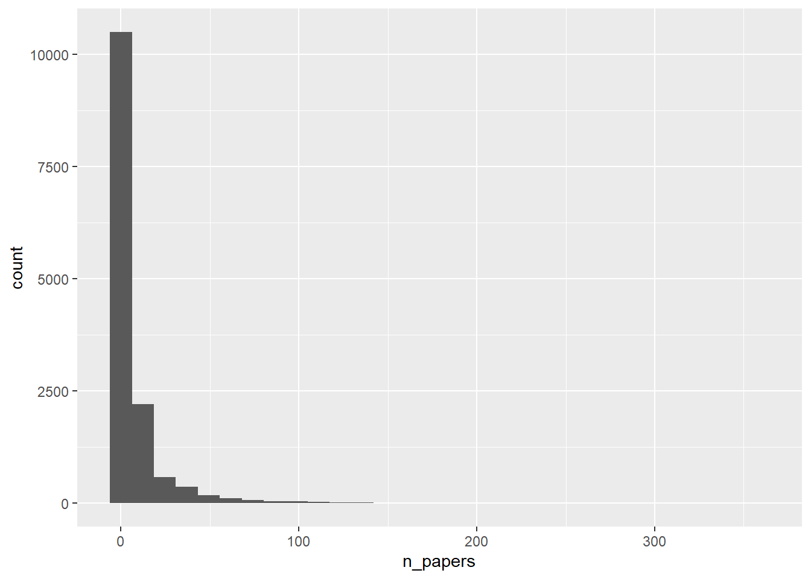
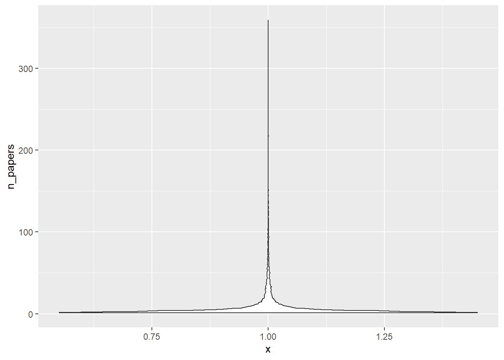
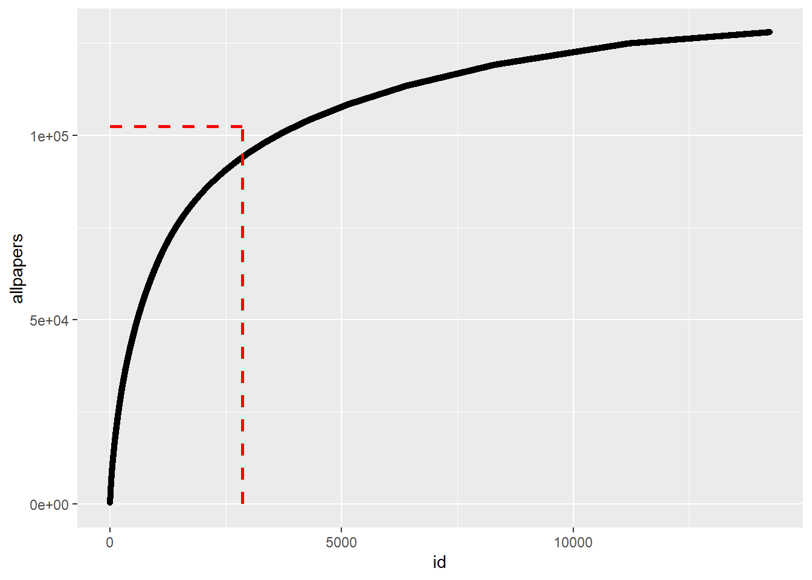

library('ggplot2')
library('readr')
library('dplyr')
library('stringr')
library('tidytuesdayR')This analysis was performed as part of an exercise for my Modern Applied Data Analysis course taught in fall 2021.
One of the weekly assignments for the students is to participate in Tidy Tuesday. I did the exercise as well, this is my product. You can get the R Markdown/Quarto file to re-run the analysis here.
Introduction
If you are not familiar with Tidy Tuesday, you can take a quick look at the TidyTuesday section on this page.
This week’s data was about an analysis of economic working papers catalogued by NBER. More on the data is here.
Loading packages
Make sure they are installed. Note: I don’t like loading meta-packages, such as the tidyverse. Doing so makes it really hard to figure our which packages are actually used. So I prefer to only load what I need.
Data loading
Apparently there is now a tidytuesdayR package that makes data loading very easy!
#tuesdata <- tidytuesdayR::tt_load('2021-09-28')Well, that command above failed, claiming that date didn’t exist. So loading the data manually after all.
papers <- readr::read_csv('https://raw.githubusercontent.com/rfordatascience/tidytuesday/master/data/2021/2021-09-28/papers.csv')Rows: 29434 Columns: 4
── Column specification ────────────────────────────────────────────────────────
Delimiter: ","
chr (2): paper, title
dbl (2): year, month
ℹ Use `spec()` to retrieve the full column specification for this data.
ℹ Specify the column types or set `show_col_types = FALSE` to quiet this message.authors <- readr::read_csv('https://raw.githubusercontent.com/rfordatascience/tidytuesday/master/data/2021/2021-09-28/authors.csv')Rows: 15437 Columns: 4
── Column specification ────────────────────────────────────────────────────────
Delimiter: ","
chr (4): author, name, user_nber, user_repec
ℹ Use `spec()` to retrieve the full column specification for this data.
ℹ Specify the column types or set `show_col_types = FALSE` to quiet this message.programs <- readr::read_csv('https://raw.githubusercontent.com/rfordatascience/tidytuesday/master/data/2021/2021-09-28/programs.csv')Rows: 21 Columns: 3
── Column specification ────────────────────────────────────────────────────────
Delimiter: ","
chr (3): program, program_desc, program_category
ℹ Use `spec()` to retrieve the full column specification for this data.
ℹ Specify the column types or set `show_col_types = FALSE` to quiet this message.paper_authors <- readr::read_csv('https://raw.githubusercontent.com/rfordatascience/tidytuesday/master/data/2021/2021-09-28/paper_authors.csv')Rows: 67090 Columns: 2
── Column specification ────────────────────────────────────────────────────────
Delimiter: ","
chr (2): paper, author
ℹ Use `spec()` to retrieve the full column specification for this data.
ℹ Specify the column types or set `show_col_types = FALSE` to quiet this message.paper_programs <- readr::read_csv('https://raw.githubusercontent.com/rfordatascience/tidytuesday/master/data/2021/2021-09-28/paper_programs.csv')Rows: 53996 Columns: 2
── Column specification ────────────────────────────────────────────────────────
Delimiter: ","
chr (2): paper, program
ℹ Use `spec()` to retrieve the full column specification for this data.
ℹ Specify the column types or set `show_col_types = FALSE` to quiet this message.Understanding the data
The explanations on the Tidy Tuesday website were a bit confusing. Looks like each CSV file only has a few variables, and papers.csv does not contain all the variables listed in the readme.
colnames(papers)[1] "paper" "year" "month" "title"colnames(authors)[1] "author" "name" "user_nber" "user_repec"colnames(programs)[1] "program" "program_desc" "program_category"colnames(paper_authors)[1] "paper" "author"colnames(paper_programs)[1] "paper" "program"Papers seem to be linked to authors by the paper_authors file and to programs (areas of work) by the paper_programs file. Probably best to combine all into one data frame. The Tidy Tuesday website has some code for that already, let’s see if it works
df <- left_join(papers, paper_authors) %>%
left_join(authors) %>%
left_join(paper_programs) %>%
left_join(programs)%>%
mutate(
catalogue_group = str_sub(paper, 1, 1),
catalogue_group = case_when(
catalogue_group == "h" ~ "Historical",
catalogue_group == "t" ~ "Technical",
catalogue_group == "w" ~ "General"
),
.after = paper
) Joining, by = "paper"
Joining, by = "author"
Joining, by = "paper"
Joining, by = "program"glimpse(df)Rows: 130,081
Columns: 12
$ paper <chr> "w0001", "w0002", "w0003", "w0004", "w0005", "w0006",…
$ catalogue_group <chr> "General", "General", "General", "General", "General"…
$ year <dbl> 1973, 1973, 1973, 1973, 1973, 1973, 1973, 1973, 1973,…
$ month <dbl> 6, 6, 6, 7, 7, 7, 8, 9, 9, 9, 9, 9, 10, 10, 10, 10, 1…
$ title <chr> "Education, Information, and Efficiency", "Hospital U…
$ author <chr> "w0001.1", "w0002.1", "w0003.1", "w0004.1", "w0005.1"…
$ name <chr> "Finis Welch", "Barry R Chiswick", "Swarnjit S Arora"…
$ user_nber <chr> "finis_welch", "barry_chiswick", "swarnjit_arora", NA…
$ user_repec <chr> NA, "pch425", NA, "pli669", "psm28", NA, NA, NA, "pli…
$ program <chr> NA, NA, NA, NA, NA, NA, NA, NA, NA, NA, NA, NA, NA, N…
$ program_desc <chr> NA, NA, NA, NA, NA, NA, NA, NA, NA, NA, NA, NA, NA, N…
$ program_category <chr> NA, NA, NA, NA, NA, NA, NA, NA, NA, NA, NA, NA, NA, N…That seems to have worked, now all data is in one data frame.
Exploration 1
My first idea is very idiosyncratic. A friend of mine is an Econ/Finance professor at Bocconi University. I’m going to see if he has any papers in that dataset.
smalldf <- df %>% filter(grepl("Wagner",name))
print(unique(smalldf$name)) [1] "Joachim Wagner" "Alexander F Wagner" "Todd H Wagner"
[4] "Stefan Wagner" "Mathis Wagner" "Ulrich J Wagner"
[7] "Wolf Wagner" "Gernot Wagner" "Zachary Wagner"
[10] "Katherine R H Wagner" "Myles Wagner" "Kathryn L Wagner" Not seeing him in there. Just to make sure, a check on first name.
smalldf <- df %>% filter(grepl("Hannes",name))
print(unique(smalldf$name))[1] "Hannes Schwandt"Ok, nothing. Might be that his area, finance, is not indexed by NBER. I don’t know enough about the econ/business/finance fields enough to know what is and isn’t part of NBER. So I guess moving on.
Exploration 2
In most areas of science and when looking at publication records, one finds that most people publish very little (e.g. a student who is a co-author on a paper, then goes into the “real world” and never publishes again) and a few people publish a lot (super-star and/or old faculty). One usually sees an 80/20 pattern or a distribution that follows a power law. Let’s see what we find here.
First, I’m doing a few more checks.
#looking at missing data for each variable
nas <- colSums(is.na(df))
print(nas) paper catalogue_group year month
0 0 0 0
title author name user_nber
0 0 0 2112
user_repec program program_desc program_category
47158 530 530 1516 Missing data pattern seems ok. To be expected that some users don’t have those NBER or REPEC IDs.
Let’s look at number of unique papers and unique authors.
n_authors = length(unique(df$author))
n_papers = length(unique(df$title))
print(n_authors)[1] 15437print(n_papers)[1] 29419Comparing those numbers to the original data frames, we see that the number of authors is same as in original authors data frame, that’s good. Number of papers (or at least unique titles) is less. Seems like some papers have the same titles? Non-unique titles is confirmed by checking the ID for each paper, which is the same as the one in the original papers CSV file.
Let’s look at those titles that show up more than once. Note that we need to do that with the original papers data frame, since the merged one contains many duplicates since each author gets their own row.
#using base R here, can of course also do that with tidyverse syntax
dfdup <- papers[duplicated(papers$title),]
print(dfdup$title) [1] "The Wealth of Cohorts: Retirement Saving and the Changing Assets of Older Americans"
[2] "Empirical Patterns of Firm Growth and R&D Investment: A Quality Ladder Model Interpretation"
[3] "The Market for Catastrophe Risk: A Clinical Examination"
[4] "Taxation and Corporate Financial Policy"
[5] "Asset Pricing with Heterogeneous Consumers and Limited Participation: Empirical Evidence"
[6] "Tax Incidence"
[7] "Liquidity Shortages and Banking Crises"
[8] "Legal Institutions and Financial Development"
[9] "Inequality"
[10] "Predictive Systems: Living with Imperfect Predictors"
[11] "Corruption"
[12] "The Dynamic Properties of Financial-Market Equilibrium with Trading Fees"
[13] "Forward Guidance"
[14] "Labor Market Integration Before the Civil War"
[15] "The Impact of Globalization on Pre-Industrial, Technologically Quiescent Economies" Some titles I can easily seen being used more than once, e.g. a paper called “Corruption”. Others sound very unique, so not sure why they show up as duplicates. If this were a serious analysis, I would look more closely into that. But for this exercise, and since it’s just a few titles, I’ll ignore and move on.
I want to look at publications per author. Since names might not be unique but NBER ID should be, I’m just going to remove those authors that don’t have an NBER ID (likely most of them have co-authored very few papers) and focus on the remaining authors. For each, I’ll count their total papers by counting how often they show up.
dfnew <- df %>% filter(!is.na(user_nber)) %>%
group_by(user_nber) %>%
summarise(n_papers = n() ) %>%
arrange(desc(n_papers)) %>%
mutate(allpapers = cumsum(n_papers))
dfnew$id = 1:nrow(dfnew) #add an ID variable for plottingLooking at the histogram of number of papers for each author.
p1 <- dfnew %>% ggplot(aes(n_papers)) + geom_histogram()
plot(p1)`stat_bin()` using `bins = 30`. Pick better value with `binwidth`.
Looks like expected, most authors have published only a few papers, a few have a lot.
Another way to look at this is with a violin plot
p1a <- dfnew %>% ggplot(aes(x=1, y=n_papers)) + geom_violin()
plot(p1a)
That’s a very flat violin plot, with almost all the density close to 1.
Doing a quick numerical summary
summary(dfnew$n_papers) Min. 1st Qu. Median Mean 3rd Qu. Max.
1.000 2.000 3.000 8.983 7.000 359.000 Of course one needs to have at least 1 paper published to be in there, so that’s the minimum. The median is 3, so half of individuals have published 3 or less. The mean is higher, as expected for skewed data, and the max is at 359 papers, confirming the histogram which shows a few individuals wrote a lot of papers.
Just because, let’s look at the 10 most published authors
head(dfnew,n=10)# A tibble: 10 × 4
user_nber n_papers allpapers id
<chr> <int> <int> <int>
1 jonathan_gruber 359 359 1
2 james_heckman 331 690 2
3 daron_acemoglu 308 998 3
4 janet_currie 306 1304 4
5 michael_bordo 297 1601 5
6 edward_glaeser 291 1892 6
7 joshua_aizenman 284 2176 7
8 martin_feldstein 272 2448 8
9 andrei_shleifer 242 2690 9
10 alan_taylor 239 2929 10Since this is not my field, I don’t know any of those individuals. But looks like the 1st one, Gruber, is somewhat famous and also worked at NBER, so maybe not surprising that his papers are in there. Not sure, I don’t know how exactly NBER works, but it’s a quick consistency check and no red flag.
This looks at the accumulation of papers for the first N authors, with number of authors on the x-axis and total papers on the y axis. If every author were to contribute the same number of papers, we’d see a straight line up the diagonal. The fact that some authors write more papers, and most just a few, pushes the curve to the upper left corner. I’m also plotting a few lines that show the 80/20 idea, i.e. the vertical line indicates 20% of authors, the horizontal indicates 80% of all published papers.
nobs = nrow(dfnew)
totpapers = max(dfnew$allpapers)
p2 <- dfnew %>% ggplot(aes(x=id, y=allpapers)) +
geom_point() +
theme(legend.position="none") +
geom_segment(aes(x = floor(nobs*0.2), y = 1, xend = floor(nobs*0.2), yend = floor(totpapers*0.8) ), colour = "red", linetype="dashed", size=1) +
geom_segment(aes(x = 1, y = floor(totpapers*0.8), xend = floor(nobs*0.2), yend = floor(totpapers*0.8) ), colour = "red", linetype="dashed", size=1)
plot(p2)
Looks like the NBER papers are fairly close to that 80/20 distribution, with few authors contributing the bulk, and most authors contributing little.
Note that this does not account for co-authorship, just doing a per-author count.
Further explorations
I’m going to leave it at this for now. In contrast to my 2019 Tidy Tuesday exploration I won’t try a fake statistical analysis here.
But I can think of a few other ideas and things to explore Here are a few:
The Tidy Tuesday website had a link to this article which looks at gender representation among the papers/authors. We could do that here too, e.g. follow their approach to try and guess gender for authors, then could stratify number of papers by gender of author.
Another possible exploration would be to look at the numbers of papers per author based on the area of research, i.e. the
programsvariable.Yet another analysis one could do is to look at the pattern of publication for those that publish a good bit (say over 50 papers) and see how numbers of papers per year changes, or how number of co-authors changes over the years.
Summary
Patterns of authorship have been explored often. Sometimes they lead to useful information. At other times, one just needs more or less meaningful numbers for career advancement purposes. See e.g. an analysis of my own papers I did and wrote up in this post covering Google scholar data and this post using the bibliometrix package.
My exploration here was not too thorough, but some expected patterns showed up, namely the 80/20 skewed distribution in authorship.
Citation
BibTeX citation:
@online{handel2021,
author = {Andreas Handel},
editor = {},
title = {Analysis of Economic Papers},
date = {2021-09-30},
url = {https://www.andreashandel.com/posts/2021-09-30-tidy-tuesday-exploration},
langid = {en}
}
For attribution, please cite this work as:
Andreas Handel. 2021. “Analysis of Economic Papers.”
September 30, 2021. https://www.andreashandel.com/posts/2021-09-30-tidy-tuesday-exploration.